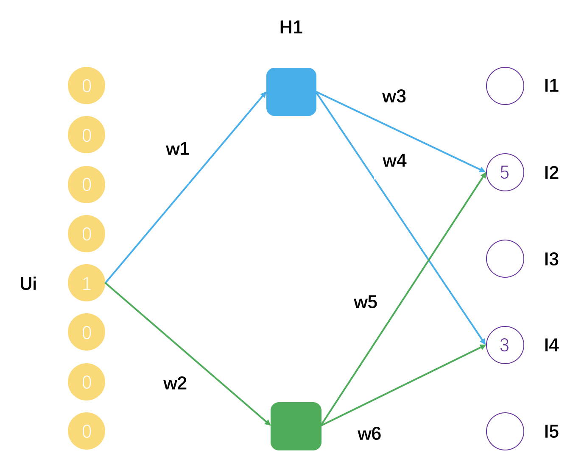
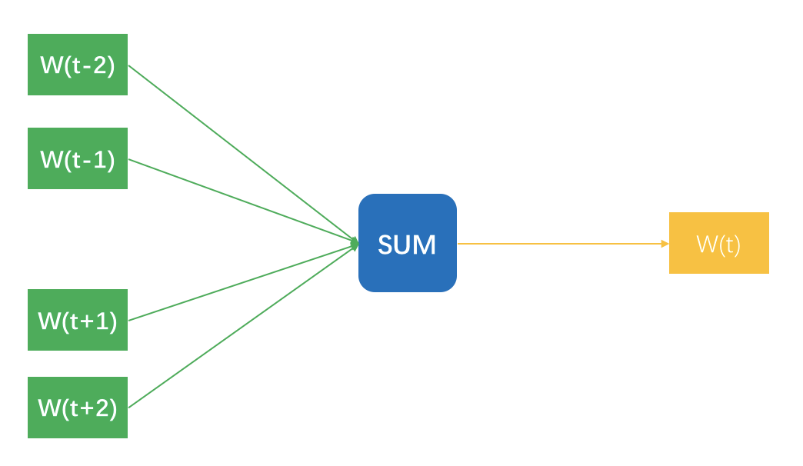
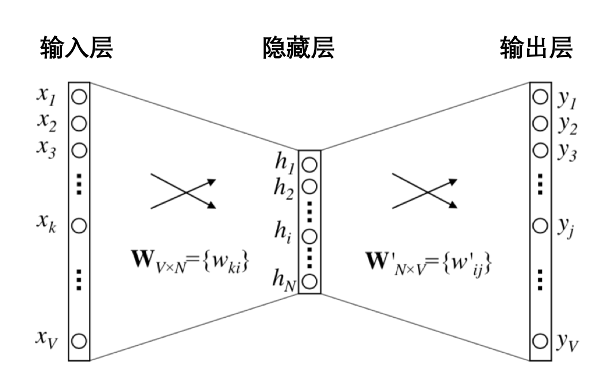
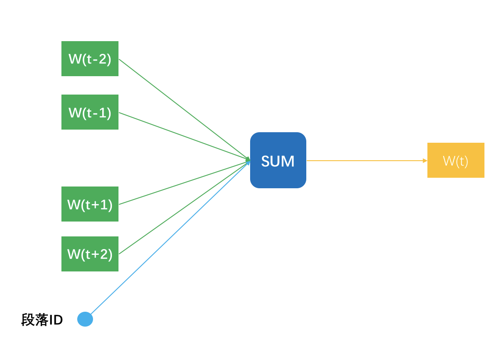
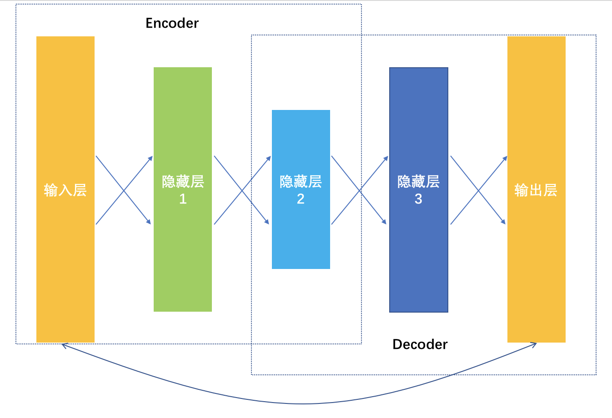
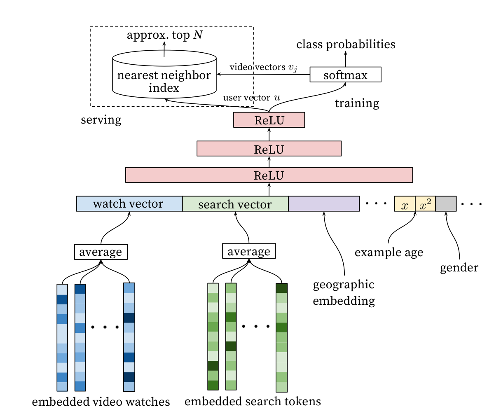

- 00 开篇词 用知识去对抗技术不平等.md.html
- 01 你真的需要个性化推荐系统吗_.md.html
- 02 个性化推荐系统有哪些绕不开的经典问题？.md.html
- 03 这些你必须应该具备的思维模式.md.html
- 04 画鬼容易画人难：用户画像的“能”和“不能”.md.html
- 05 从文本到用户画像有多远.md.html
- 06 超越标签的内容推荐系统.md.html
- 07 人以群分，你是什么人就看到什么世界.md.html
- 08 解密“看了又看”和“买了又买”.md.html
- 09 协同过滤中的相似度计算方法有哪些.md.html
- 10 那些在Netflix Prize中大放异彩的推荐算法.md.html
- 11 Facebook是怎么为十亿人互相推荐好友的.md.html
- 12 如果关注排序效果，那么这个模型可以帮到你.md.html
- 13 经典模型融合办法：线性模型和树模型的组合拳.md.html
- 14 一网打尽协同过滤、矩阵分解和线性模型.md.html
- 15 深度和宽度兼具的融合模型 Wide and Deep.md.html
- 16 简单却有效的Bandit算法.md.html
- 17 结合上下文信息的Bandit算法.md.html
- 18 如何将Bandit算法与协同过滤结合使用.md.html
- 19 深度学习在推荐系统中的应用有哪些_.md.html
- 20 用RNN构建个性化音乐播单.md.html
- 21 构建一个科学的排行榜体系.md.html
- 22 实用的加权采样算法.md.html
- 23 推荐候选池的去重策略.md.html
- 24 典型的信息流架构是什么样的.md.html
- 25 Netflix个性化推荐架构.md.html
- 26 总览推荐架构和搜索、广告的关系.md.html
- 27 巧妇难为无米之炊：数据采集关键要素.md.html
- 28 让你的推荐系统反应更快：实时推荐.md.html
- 29 让数据驱动落地，你需要一个实验平台.md.html
- 30 推荐系统服务化、存储选型及API设计.md.html
- 31 推荐系统的测试方法及常用指标介绍.md.html
- 32 道高一尺魔高一丈：推荐系统的攻防.md.html
- 33 和推荐系统有关的开源工具及框架介绍.md.html
- 34 推荐系统在互联网产品商业链条中的地位.md.html
- 35 说说信息流的前世今生.md.html
- 36 组建推荐团队及工程师的学习路径.md.html
- 加餐 推荐系统的参考阅读.md.html
- 结束语 遇“荐”之后，江湖再见.md.html
- 捐赠
19 深度学习在推荐系统中的应用有哪些_
时至今日，深度学习已经不是一个新名词了，由于它的出现，计算机视觉、自然语言理解等领域的从业者都过上了好日子，错误率大幅度降低。
尤其是那些不断号称端到端的建模方式，让还在埋头于特征工程的推荐系统从业者们跃跃欲试，想赶紧引入深度学习大显身手。
经过这些年学界和业界的不断尝试，深度学习在推荐系统中已经有了很多成功的应用。
所以我在这个专栏里面理应本着实用落地的原则给你介绍一下，到底深度学习在推荐系统中有些什么应用，以及到底是怎么回事？
深度学习与推荐系统
深度学习也就是深度神经网络，并不是一个全新的概念，而是枯木逢春；所以它才能在计算力成本下降、效率提升、数据量陡增的今天得以焕发光彩，原来的浅层模型可以逐渐深入，挖掘出事物背后的更多规律和特征。
因此，深度学习的原理在这里并不做过多涉及，如果需要了解，你可以去专攻一下深度学习。
我在这里仅仅用简单的语言力图消除一些概念上的陌生感，在有了一些直观的认识后，直接进入到应用阶段，看看它可以帮助你做什么事。
你还记得矩阵分解吗？矩阵分解是把原来用户和物品之间的大矩阵，分解成了两个小矩阵相乘。这两个小矩阵小在哪？
原始的矩阵中，表示每个用户的向量是物品，表示每个物品的向量是用户，两者向量的维度都特别高不说，还特别稀疏，分解后用户向量和物品向量不但维度变得特别小，而且变稠密了。
业界还把这个稠密的向量叫做隐因子，意图直观说明它的物理意义：用户背后的偏好因子，物品背后的主题因子。
实际上，你完全可以把矩阵分解看成是一种浅层神经网络，只有一层，它的示意图如下。

这个示意图表示了一个用户Ui，评分过的物品有I2和I4，分解后的矩阵隐因子数量是2，用户Ui的隐因子向量就是[w1, w2]，物品I2的隐因子向量是[w3, w5]，物品I4的隐因子向量是[w4, w6]。
可以把矩阵分解看成是一个拥有一个隐藏层的神经网络，得到的隐因子向量就是神经网络的连接权重参数。
在前面的专栏中，我第一次提到深度学习时，还建议你把逻辑回归看成一个没有隐藏层的神经网络。因此，深度学习，也就是深度神经网络并不是那么神秘，只是深。这个“深”代表了事物的某些本质属性。
这种对本质属性的挖掘，有两个好处。
可以更加高效且真实地反映出事物本身的样子。对比一下，一张图片用原始的像素点表示，不但占用空间大，而且还不能反应图片更高级的特征，如线条、明暗、色彩，而后者则可以通过一系列的卷积网络学习而得。
可以更加高效真实地反映出用户和物品之间的连接。对比一下，以用户历史点击过的物品作为向量表示用户兴趣；用这些物品背后隐藏的因子表示用户兴趣，显然后者更高效更真实，因为它还考虑了物品本身的相似性，这些信息都压缩到隐因子向量中了，同时再得到物品的隐因子向量，就可以更加直接平滑地算出用户对物品的偏好程度。
这两个好处，正是深度学习可以帮助推荐系统的地方。第一个叫做Embedding，就是嵌入，第二个叫做Predicting，就是预测。
其实两者我在前面的内容都已经有涉及了，矩阵分解得到的隐因子向量就是一种Embedding，Word2vec也是一种Embedding，Wide&Deep 则是用来预测的。关于第二种，具体来说有几个方向：深度神经网络的CTR预估，深度协同过滤，对时间序列的深度模型。
下面逐一带你认识。首先就是深度学习的第一种应用。
各种2vec
你还记得在内容推荐那一章里，我跟你提到过，对内容的挖掘怎么深入都不为过，越深入越好，很多时候甚至优于对排序模型的优化。
那里提到了Word2vec，用于学习词嵌入向量。当把一个词表示成一个稠密的向量后，就可以计算词的相似度，进而可以计算句子的相似度，也可以直接把这个稠密向量作为特征输入给高级的预测模型。
于是，这个2vec的思想，就被发扬光大了。首先还是在文本领域，从Word2vec到Sentence2vec，再到Doc2vec。其实思想都类似甚至会让你觉得有上当受骗的错觉。
简单介绍一下Word2vec。你知道，Word2Vec最终是每个词都得到一个稠密向量，十分类似矩阵分解得到的隐因子向量，得到这个向量有两个训练方法。
先说第一个方法，想象你拿着一个滑动窗口，在一篇文档中从左往右滑动，每一次都有N个词在这个窗口内，每移动一下，产生N-1条样本。
每条样本都是用窗口内一个词去预测窗口正中央那个词，明明窗口内是N个词，为什么只有N-1条样本呢？因为正中央那个词不用预测它本身啊。这N-1条样本的输入特征是词的嵌入向量，预测标签是窗口那个词。示意图如下所示。

图中把N-1个样本放在一起示意的，无法看出隐藏层，实际上，输入时每个词可以用One-hot方式表示成一个向量，这个向量长度是整个词表的长度，并且只有当前词位置是1，其他都是0。
隐藏层的神经元个数就是最终得到嵌入向量的维度数，最终得到的嵌入向量元素值，实际上就是输入层和隐藏层的连接权重。示意图如下。

至于Word2vec的第二种训练方法，则是把上述的N-1条样本颠倒顺序，用窗口中央的词预测周围的词，只是把输入和输出换个位置，一样可以训练得到嵌入向量。
这里注意，看上去Word2vec是构造了一个监督学习任务，但实际上并不是为了得到一个预测模型，在实际中用词预测词，是为了得到词的嵌入向量，Embedding本身就是目的。
我们沿着Word2vec这种学习嵌入向量的思路想，既然词可以表示成一个稠密向量干这干那，那不如来个Sentence2vec，把一个句子表示成一个嵌入向量，通常是把其包含的词嵌入向量加起来就完事了。
而Doc2vec则略微一点点不同，说明一点，多个句子构成一个段落，所以这里的Doc其实就是段落。Doc2vec在窗口滑动过程中构建N-1条样本时，还增加一条样本，就是段落ID预测中央那个词，相当于窗口滑动一次得到N条样本。
一个段落中有多少个滑动窗口，就得到多少条关于段落ID的样本，相当于这个段落中，段落ID在共享嵌入向量。段落ID像个特殊的词一样，也得到属于自己的嵌入向量，也就是Doc2vec。

理解了Word2vec之后，它在推荐系统中的应用就有举一反三的应用。第一个就是Product2vec，你看这名字就知道我要干嘛了，对，就是给商品学习一个嵌入向量。
这简直就是照着词嵌入的做法来，把用户按照时间先后顺序加入到购物车的商品，看成一个一个的词，一个购物车中所有的商品就是一个文档；于是照猫画虎学出每个商品的嵌入向量，用于去做相关物品的推荐，或者作为基础特征加入到其他推荐排序模型中使用。
类似的，如果是应用商场的App推荐，也可以依计行事，把用户的下载序列看成文档，学习每个App的嵌入向量。
虽然，这个嵌入学习得到的结果，样子和矩阵分解得到隐因子向量一样，但是机制不同，可以两者都有，拼接成一个更大的稠密向量去做你喜欢做的事，比如CTR预估。
且慢，各种2vec的做法其实还不算深度学习，毕竟隐藏层才一层而已。如果要用更深的模型学习嵌入向量，就是深度学习中的AutoEncoder。
它是一种输入和输出一模一样的神经网络，这个神经网络就一个目的，更加清楚地认识自己，在这个优化目标指导下，学到的网络连接权重都是不同的嵌入向量，所以也叫做AutoEncoder，自动编码器。
从输入数据逐层降维，相当于是一个对原始数据的编码过程，到最低维度那一层后开始逐层增加神经元，相当于是一个解码过程，解码输出要和原始数据越接近越好，相当于在大幅度压缩原始特征空间的前提下，压缩损失越小越好。

以上是深度学习如何通过学习更好地表达事物特征，帮助推荐系统取得更好效果的做法。
YouTube视频推荐
以YouTube为例，它们在自己的推荐系统大量用到了深度学习，用于推荐更好的视频给用户。我来给你仔细描述一下，具体到视频推荐场景，深度学习可以在哪些地方用到。
首先，Youtube把推荐的预测任务看成是一个多分类，这个和之前常规的推荐系统要么预测行为要么预测评分的做法不太一样，而是把候选物品当成多个类别，预测用户下一个会观看哪个视频。
\[P(w_{t}=i | U,C) = \\frac{e^{v_{i}u}}{\\sum_{j\\in{V}}{e^{v_{j}u}}}\]
这个公式中U是用户C是场景，输入是视频的嵌入向量和用户的嵌入向量。这里就涉及了先要使用深度神经网络，从用户历史反馈行为和场景信息中学习物品和用户的嵌入向量。整个推荐排序模型示意图如下。

看这个推荐模型示意图，就可以看到深度学习应用在了哪些地方。
- 根据观看历史把视频变成了嵌入向量，然后平均后作为输入特征之一，这个和前面的Product2vec的思路一致，把观看历史看成文档，观看的视频看成词。
- 搜索Query也变成了嵌入向量，平均之后作为输入特征之二。
- 人口统计学信息统统都嵌入了。
- 还加入视频的年龄信息，也就是在预测时，视频上传多久了。
- 所有这些不同的嵌入向量拼接成一个大的输入向量，经过深度神经网络，在输出层以Softmax作为输出函数，预测下一个观看视频。
在模型训练时，以Softmax作为输出层，但是在实际线上预测服务时，由于模型关心相对顺序，所以并不需要真的去计算Softmax，而是拿着用户的特征向量做近似的近邻搜索，只生成最相近的一些推荐结果。
整个推荐系统非常好理解，也比较好落地，所有的模型都可以通过TensorFlow快速实现。
总结
通过观察YouTube的推荐系统中所用到的深度学习来看，在排序方面，深度神经网络已经崭露头角，包括前面讲融合模型时，专门讲到的Wide&Deep模型，也是深度学习在排序方面的贡献。
除此之外，深度学习更多发挥作用的地方是特征表达上，各种嵌入技术得以让物品、用户、关系等对象的特征化有更好的输出。
今天主要介绍了深度学习在推荐系统可以发挥哪些作用，同时以YouTube为例，介绍了国际大厂在这方面的落地情况。
从YouTube的推荐系统可以看出，深度学习主要贡献在于特征表达学习和排序模型上。当然，深度学习纵有千般好，如果你的数据量少得可怜，那么你也只能过过眼瘾，很难真正落地执行。
给你留一个思考题，我们一起交流。为什么YouTube排序模型训练时规规矩矩按照Softmax输出，以交叉熵作为目标函数，但在线上运行时，却可以按近邻搜索去近似，背后有什么考虑？欢迎留言一起讨论。
© 2019 - 2023 Liangliang Lee. Powered by gin and hexo-theme-book.